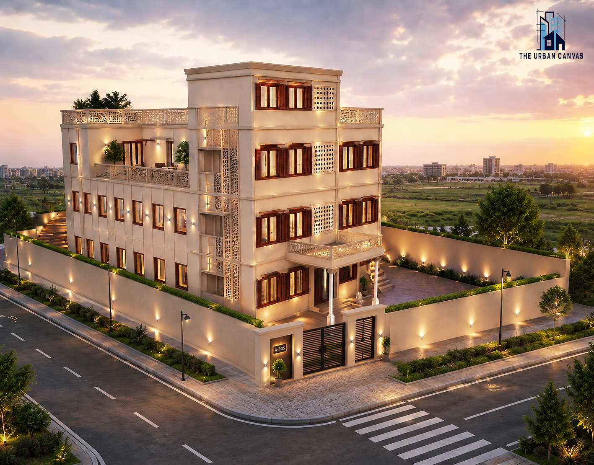
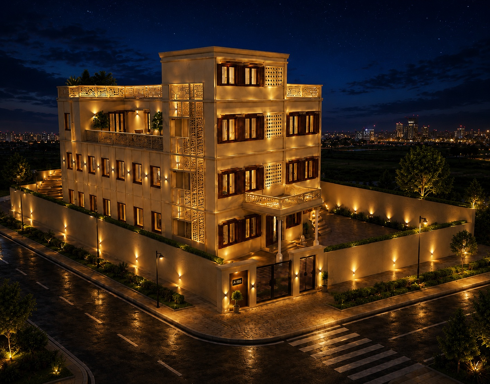

Contemporary Institutional Planning
Shiksha Sadan is a contemporary institutional building located in Hatras, developed with a modern architectural character for an educational environment.
THE URBAN CANVAS was involved in the 3D visualization of the project, translating the proposed architectural design into detailed day and night visualizations.
The architectural expression focuses on contemporary institutional planning, with perforated facade detailing providing a distinctive visual identity to the building.
Conceived as a contemporary institutional building, Shiksha Sadan establishes a modern educational character through its architectural planning and facade expression.
Perforated facade detailing adds depth and architectural identity to the building while reinforcing its contemporary institutional language.

The architectural character of Shiksha Sadan is defined by a contemporary institutional approach, creating a clear and modern identity for the educational building.
Perforated facade detailing forms a key visual element, introducing rhythm and depth to the building elevation.
The resulting composition presents Shiksha Sadan as a modern institutional environment with a distinctive architectural presence.